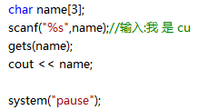
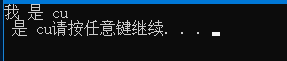

1.变量名错误
int char;
int system;
system("pause");
2.变量还没声明就使用
age = 18;
3.变量的输入和使用顺序不当
int age;//int age = 0;
cout << "你今年" << age << "岁了" <<endl;
cin >>age;//这行应提前
4.数据输入后,类型不匹配
输入l0(小写的L)
5.输入数据时,前面的数据输入错误,导致后面的数据都不能输入(不隐藏错误)
int a,b,c;
cin >> a >> b >>c;
//1 2 3正确 //1 a 3 会导致b和c都不正确
6.使用string，导入库后提示未声明
c++是库string，c是string.h
string是在std空间内，std::string
7.cin接受用户输入时接收不完整
是用户输入了空白字符(包括空格，制表符，回车符)
8.有两次输入的代码，但是只有一次输入的机会
scanf("%s",name);//遇到\n结束，但\n还留在缓冲区
gets(name);//读一行，遇到回车符结束


缓冲区还有 是 cu(第一个是空格)